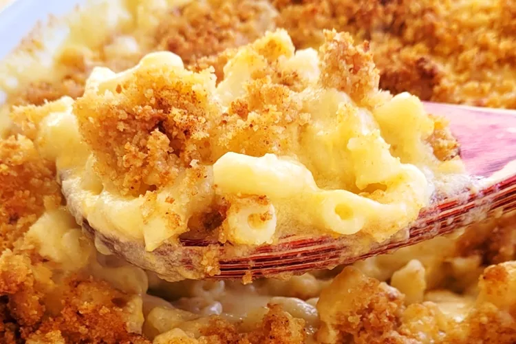

Mac and Cheese Recipe

Mac and Cheese
Skip the boxed stuff and make homemade mac and cheese tonight. This from-scratch macaroni and cheese recipe will become a staple in your dinner rotation.
Ingredients:
- Macaroni
- Butter and flour
- Milk
- Cheese
- Seasonings
- Bread crumbs
Steps:
- Boil the noodles: Boil the macaroni in salted water until the noodles are al dente. Drain and transfer to a prepared baking dish.
- Make the cheese sauce: Melt butter, then whisk in the flour. Whisk in the milk, bring to a simmer, and stir in the cheeses. Season with salt and pepper and continue simmering until the sauce is thick. Pour the sauce over the noodles and stir.
- Make the topping: Melt two tablespoons of butter in a skillet, add the bread crumbs, and toast until the crumbs are brown. Spread the topping over the macaroni and cheese, then sprinkle with paprika.
- Bake the mac and cheese: Bake in the preheated oven until the topping is golden brown.
Back to Odin Recipes